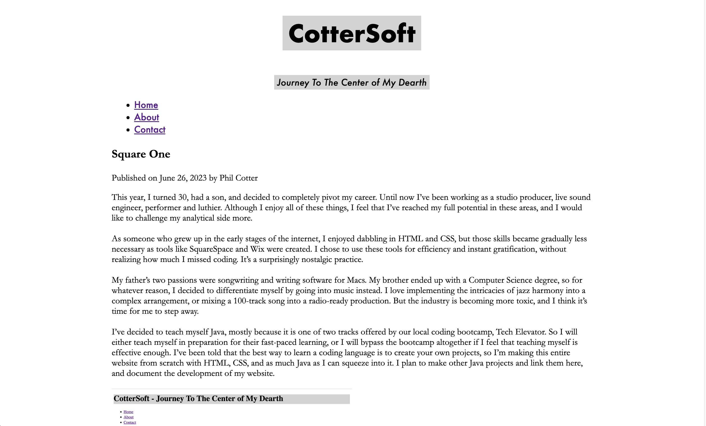
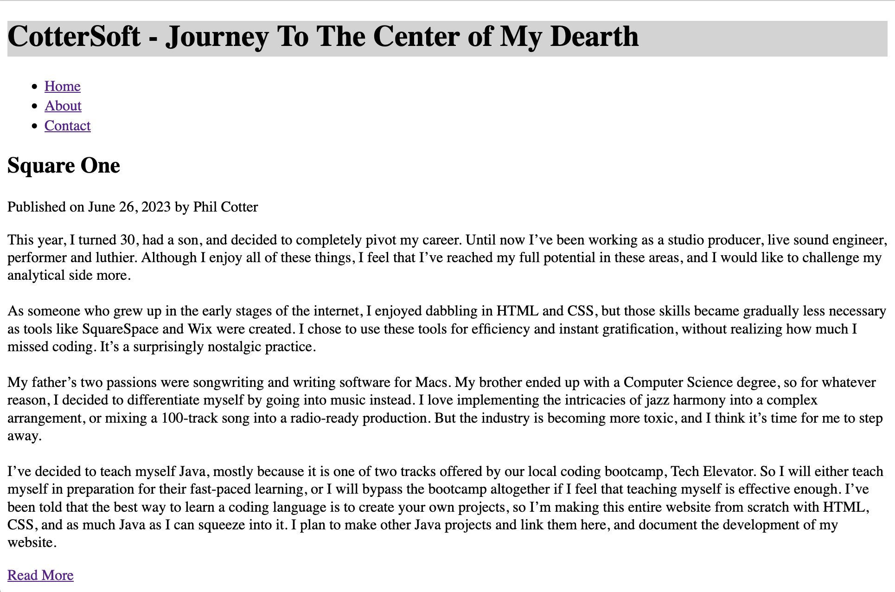

How Learning Spanish Boosts Computer Programming Skills
Published on by Phil Cotter
Introduction Learning a second language, such as Spanish, has proven to be beneficial in various aspects of life, including computer programming. This article explores my personal journey of learning Spanish and how it has enhanced my abilities as a computer programming student. From improved cognitive skills to fostering creativity, the connection between language learning and coding prowess is evident.
Cognitive Agility and Problem-Solving
Learning Spanish demands attention to grammar, syntax, and vocabulary, which improves cognitive agility. This mental exercise enhances my critical thinking and problem-solving skills in computer programming. Recognizing patterns in a new language translates to better debugging and code optimization.
Adaptability in a Dynamic Field
Computer programming constantly evolves, and learning Spanish cultivates adaptability. Exposure to diverse cultures fosters a mindset that embraces change and new ideas. This adaptability is invaluable in programming, where staying up-to-date with technologies and methodologies is essential.
Effective Communication and Collaboration
Mastering Spanish refines communication skills, enabling clear and concise conveyance of technical concepts. This proficiency facilitates better collaboration within programming teams and interaction with clients and end-users, leading to more successful projects.
Leveraging Abundance of Learning Resources
Language learning introduces me to various resources, which parallels the vast array of programming materials available. Utilizing these resources, like coding tutorials and challenges, enhances my coding skills and keeps me engaged in continuous learning.
Cultivating Creativity
Spanish exposes me to a rich cultural heritage expressed through literature, music, and art. This exposure fosters creativity in programming, encouraging innovative and imaginative problem-solving approaches.
Conclusion
Learning Spanish has been a transformative experience, enriching both my linguistic abilities and my performance as a computer programming student. The correlation between cognitive agility, adaptability, effective communication, and cultivating creativity has fortified my skills as a programmer. Embracing language learning is an investment that yields rewards beyond linguistic proficiency, positively impacting all aspects of life, including the pursuit of excellence in computer programming.
Hello, Sharks
Published on by Phil Cotter
I got the blog up and running on the GitHub server. I’ve had the domain and have been working on the design purely on my local network. Today marks our public debut! I’ll be patiently waiting by the phone for the Today Show to call.
I also discovered and joined Harvard’s CS50 Intro To Computer Science course, and it’s incredibly informative. I already understand a lot more of the logic behind Java. However, I’ve paused reading my Java textbook so I can do one thing at a time. CS50 has been deep in the C, and I don’t want to confuse the two languages.
Some goals for the website:
-Make About Page
-Create a "Read More" button so that only 3 posts appear at one time.
Be There When I Get There
Published on by Phil Cotter
So far, I’ve made it to page 112 of “Starting Out With Java - From Control Structures Through Objects”. I have been underlining and making comments throughout. I have quite a ways to go, you could say…as the textbook is 1126 pages long. But I’m not worried about the length. I plan to read it a second time so that I really internalize the vocabulary and the structures of Java.
It feels like I’m back in college, and I love the feeling of learning. I forgot how much I enjoyed analytical endeavors such as this.
On the HTML side of things, today I added margins, fonts and a few other simple style choices to the website. Huzzah!

Square One
Published on by Phil Cotter
This year, I turned 30, had a son, and decided to completely pivot my career. Until now I’ve been working as a studio producer, live sound engineer, performer and luthier. Although I enjoy all of these things, I feel that I’ve reached my full potential in these areas, and I would like to further challenge my analytical side.
As someone who grew up in the early stages of the internet, I enjoyed dabbling in HTML and CSS, but those skills became gradually less necessary as tools like SquareSpace and Wix were created. I chose to use these tools for efficiency and instant gratification, without realizing how much I missed coding. It’s a surprisingly nostalgic practice.
My father’s two passions were songwriting and writing software for Macs. My brother ended up with a Computer Science degree, so for whatever reason, I decided to differentiate myself by going into music instead. I love implementing the intricacies of jazz harmony into a complex arrangement, or mixing a 100-track song into a radio-ready production. But the industry is becoming more toxic, and I think it’s time for me to step away.
I’ve decided to teach myself Java, mostly because it is one of two tracks offered by our local coding bootcamp, Tech Elevator. So I will either teach myself in preparation for their fast-paced learning, or I will bypass the bootcamp altogether if I feel that teaching myself is effective enough. I’ve been told that the best way to learn a coding language is to create your own projects, so I’m making this entire website from scratch with HTML, CSS, and as much Java as I can squeeze into it. I plan to make other Java projects and link them here, and document the development of my website.
